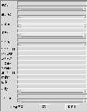

データ登録ダイアログについて

各項目を入力して登録ボタンを押します。社有図書の場合は、一番下のラジオ
ボタンを押して下さい。なお、社有図書の新規登録は、図書データベースの管
理者だけが可能です。（一部データの修正は管理者でなくても可能）一般
図書の新規登録は誰でも可能ですが、修正、削除はデータの登録者だけが行な
えます。
以下、データフォーマットが規定されてい
る項目や、入力が必須である項目についてのみ説明します。
（使用する文字については、いわゆる半角カタカナ、全角の英数字は避けるようにして下さい）
書名
書名を書きます。必須。
発行年月日
yyyy/mm/dd のように、スラッシュで区切ってそれぞれ年は４桁、月、日は２桁以内で登録します。
分類番号
社用図書の場合だけ入力します。
登録番号
新規登録の場合、入力の必要ありません。入力しても無視されます。
購入年月日
発行年月日と同じフォーマットです。必須。
保管部所
個人の場合は、ログイン名などを書くと良いでしょう。
注記
社用図書の場合は、保管者などを書きます。
keyword
自由にキーワードを記述します。複数のキーワードは、１バイトコードの "," で区切ります。
[インデックスへ戻る]